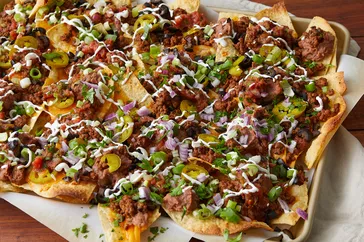

Super Nachos

Description
These homemade nachos are great for game day. This recipe makes a huge meal-sized tray of nachos loaded with taco-seasoned ground beef, refried beans, salsa, jalapeños, and cheese.
Ingredients
- Aluminum Foil: To line the baking dish for easy cleanup
- Ground Beef: 1 pound ground beef
- Water: ¾ cup water
- Taco Seasoning Mix: 1 (1.25 ounce) package taco seasoning mix
- Tortilla Chips: 1 (18 ounce) package restaurant-style tortilla chips
- Sharp Cheddar Cheese: 1 cup shredded sharp Cheddar cheese, or more to taste
- Refried Beans: 1 (15.5 ounce) can refried beans
- Black Olives: 1 (10 ounce) can pitted black olives, drained and chopped
- Salsa: 1 cup salsa
- Sour Cream: 1 cup sour cream, or more to taste
- Green Onions: 4 green onions, diced
- Jalapeno Peppers: 1 (4 ounce) can sliced jalapeno peppers, drained
Steps
- Preheat the oven broiler. Set the oven rack about 6 inches from the heat source. Line a baking sheet with aluminum foil.
- Gather all ingredients. Cook and stir ground beef in a skillet over medium heat until meat is crumbly and no longer pink, 5 to 10 minutes.
- Drain excess grease. Stir in water and taco seasoning mix; simmer until beef mixture has thickened, 8 to 10 minutes.
- Spread tortilla chips on the prepared baking sheet. Top with Cheddar cheese, then dot with refried beans and ground beef mixture.
- Broil in the preheated oven until cheese is melted, 3 to 5 minutes. Top nachos with olives, salsa, sour cream, green onions, and jalapeño peppers.